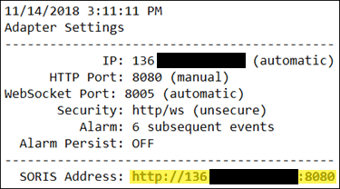

Add a SORIS Adapter
- In System Browser, select Management View.
- Select Project > Field Networks > [network name].
- Click the Object Configurator tab.
- Click New
 and select New SORIS Adapter.
and select New SORIS Adapter. - In the New object dialog box, enter the desired name and description of the adapter.
- Click OK.
- Select the SORIS tab.
- In Windows Explorer, navigate to and open SORIS_Adapter_Settings.txt, which is installed in one of three locations:
NOTE: Depending on how the adapter was installed, the path may or may not contain a Bin directory. - [drive:]\Siemens\[adapter name]\Bin\Logs
- [drive:]\Program Files(x86)\Siemens\[adapter name]\Bin\Logs
- [Installation Drive]:\[Installation Folder]\GMSMainProject\Siemens\[adapter name]\Bin\Logs
- In the last line of the file, copy the SORIS Address.
Example:
NOTE: To enter a URL other than the default, follow the instructions in the Configure Adapter Windows Service topic that follows. - Paste the address in the URL field.
- (Optional) If a client certificate is required—that is, the adapter is running on a remote client—expand the Security section, and then do the following:
- If you have a C# Adapter and you are not using a self-signed certificate, select the Validate Server Certificate with CA check box. If you are using a self-signed certificate, do not check the check box.
NOTE: If you have a Java Adapter, do not select the Validate Server Certificate with CA check box. Desigo CC is not able to validate a CA server certificate in this scenario. - Click Browse, and select the desired certificate from the Select Certificate dialog box.
- Click OK.
- Click Save
 .
. - Verify that the adapter is connected by viewing the Online property in the Extended Operation tab. If it is not connected, click Discover in the URL property row.
- In System Browser, your subsystem devices appear under Project > Field Networks > [network name] > [adapter name].